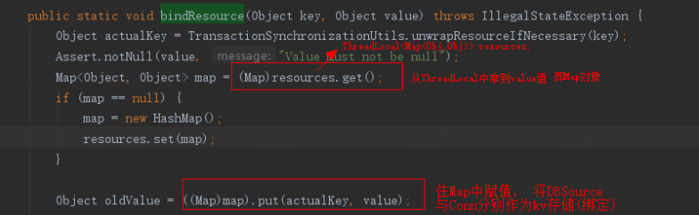
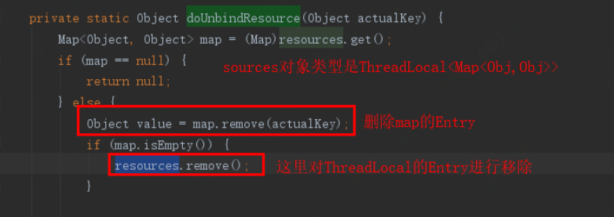

中高级阶段开发者出去面试，应该躲不开ThreadLocal相关问题，本文就常见问题做出一些解答，欢迎留言探讨。
ThreadLocal为java并发提供了一个新的思路， 它用来存储Thread的局部变量， 从而达到各个Thread之间的隔离运行。它被广泛应用于框架之间的用户资源隔离、事务隔离等。
但是用不好会导致内存泄漏， 本文重点用于对它的使用过程的疑难解答， 相信仔细阅读完后的朋友可以随心所欲的安全使用它。
ThreadLocal操作不当会引发内存泄露，最主要的原因在于它的内部类ThreadLocalMap中的Entry的设计。
Entry继承了WeakReference<ThreadLocal<?>>，即Entry的key是弱引用，所以key'会在垃圾回收的时候被回收掉， 而key对应的value则不会被回收， 这样会导致一种现象：key为null，value有值。
key为空的话value是无效数据，久而久之，value累加就会导致内存泄漏。
static class ThreadLocalMap {
static class Entry extends WeakReference<ThreadLocal<?>> {
Object value;
Entry(ThreadLocal<?> k, Object v) {
super(k);
value = v;
}
}
...
}
每次使用完ThreadLocal都调用它的remove()方法清除数据。因为它的remove方法会主动将当前的key和value(Entry)进行清除。
private void remove(ThreadLocal<?> key) {
Entry[] tab = table;
int len = tab.length;
int i = key.threadLocalHashCode & (len-1);
for (Entry e = tab[i];
e != null;
e = tab[i = nextIndex(i, len)]) {
if (e.get() == key) {
e.clear(); // 清除key
expungeStaleEntry(i); // 清除value
return;
}
}
}
e.clear()用于清除Entry的key，它调用的是WeakReference中的方法:this.referent = null
expungeStaleEntry(i)用于清除Entry对应的value， 这个后面会详细讲。
ThreadLocal的设计者也意识到了这一点(内存泄漏)， 他们在一些方法中埋了对key=null的value擦除操作。
这里拿ThreadLocal提供的get()方法举例，它调用了ThreadLocalMap#getEntry()方法，对key进行了校验和对null key进行擦除。
private Entry getEntry(ThreadLocal<?> key) {
// 拿到索引位置
int i = key.threadLocalHashCode & (table.length - 1);
Entry e = table[i];
if (e != null && e.get() == key)
return e;
else
return getEntryAfterMiss(key, i, e);
}
如果key为null， 则会调用getEntryAfterMiss()方法，在这个方法中，如果k == null ， 则调用expungeStaleEntry(i);方法。
private Entry getEntryAfterMiss(ThreadLocal<?> key, int i, Entry e) {
Entry[] tab = table;
int len = tab.length;
while (e != null) {
ThreadLocal<?> k = e.get();
if (k == key)
return e;
if (k == null)
expungeStaleEntry(i);
else
i = nextIndex(i, len);
e = tab[i];
}
return null;
}
expungeStaleEntry(i)方法完成了对key=null 的key所对应的value进行赋空， 释放了空间避免内存泄漏。
同时它遍历下一个key为空的entry， 并将value赋值为null， 等待下次GC释放掉其空间。
private int expungeStaleEntry(int staleSlot) {
Entry[] tab = table;
int len = tab.length;
// expunge entry at staleSlot
tab[staleSlot].value = null;
tab[staleSlot] = null;
size--;
// Rehash until we encounter null
Entry e;
int i;
// 遍历下一个key为空的entry， 并将value指向null
for (i = nextIndex(staleSlot, len);
(e = tab[i]) != null;
i = nextIndex(i, len)) {
ThreadLocal<?> k = e.get();
if (k == null) {
e.value = null;
tab[i] = null;
size--;
} else {
int h = k.threadLocalHashCode & (len - 1);
if (h != i) {
tab[i] = null;
// Unlike Knuth 6.4 Algorithm R, we must scan until
// null because multiple entries could have been stale.
while (tab[h] != null)
h = nextIndex(h, len);
tab[h] = e;
}
}
}
return i;
}
同理， set()方法最终也是调用该方法(expungeStaleEntry)， 调用路径: set(T value)->map.set(this, value)->rehash()->expungeStaleEntries()
remove方法remove()->ThreadLocalMap.remove(this)->expungeStaleEntry(i)
这样做， 也只能说尽可能避免内存泄漏， 但并不会完全解决内存泄漏这个问题。比如极端情况下我们只创建ThreadLocal但不调用set、get、remove方法等。所以最能解决问题的办法就是用完ThreadLocal后手动调用remove().
这里主要是强化一下手动remove的思想和必要性，设计思想与连接池类似。
包装其父类remove方法为静态方法，如果是spring项目， 可以借助于bean的声明周期， 在拦截器的afterCompletion阶段进行调用。
这个问题就比较有深度了，是你谈薪的小小资本。
如果key设置为强引用， 当threadLocal实例释放后， threadLocal=null， 但是threadLocal会有强引用指向threadLocalMap，threadLocalMap.Entry又强引用threadLocal， 这样会导致threadLocal不能正常被GC回收。
弱引用虽然会引起内存泄漏， 但是也有set、get、remove方法操作对null key进行擦除的补救措施， 方案上略胜一筹。
一并考察了你的gc基础。
事实上，当currentThread执行结束后， threadLocalMap变得不可达从而被回收，Entry等也就都被回收了，但这个环境就要求不对Thread进行复用，但是我们项目中经常会复用线程来提高性能， 所以currentThread一般不会处于终止状态。
ThreadLocal的概念。
Thread和ThreadLocal是绑定的， ThreadLocal依赖于Thread去执行， Thread将需要隔离的数据存放到ThreadLocal(准确的讲是ThreadLocalMap)中, 来实现多线程处理。
加分项来了。
ThreadLocal天生为解决相同变量的访问冲突问题， 所以这个对于spring的默认单例bean的多线程访问是一个完美的解决方案。spring也确实是用了ThreadLocal来处理多线程下相同变量并发的线程安全问题。
要想实现jdbc事务， 就必须是在同一个连接对象中操作， 多个连接下事务就会不可控， 需要借助分布式事务完成。那spring 如何保证数据库事务在同一个连接下执行的呢？
DataSourceTransactionManager 是spring的数据源事务管理器， 它会在你调用getConnection()的时候从数据库连接池中获取一个connection， 然后将其与ThreadLocal绑定， 事务完成后解除绑定。这样就保证了事务在同一连接下完成。
概要源码：
1.事务开始阶段：org.springframework.jdbc.datasource.DataSourceTransactionManager#doBegin->TransactionSynchronizationManager#bindResource->org.springframework.transaction.support.TransactionSynchronizationManager#bindResource

2.事务结束阶段:
org.springframework.jdbc.datasource.DataSourceTransactionManager#doCleanupAfterCompletion->TransactionSynchronizationManager#unbindResource->org.springframework.transaction.support.TransactionSynchronizationManager#unbindResource->TransactionSynchronizationManager#doUnbindResource

Java知音10月基础篇